El Mini Dungeón es un divertido juego de mazmorras como los juegos de aventuras de "Zelda". Usaremos la cámara y como controlarla, regiones para poder
entrar a otras escenas, tileset para diseñar la mazmorra, reproduciremos música ó sonidos en distintos canales de sonido para que la música de
fondo este constantemente sonando.
Para pasar de nivel tendremos que eliminar los enemigos y pisar los interruptores.
Caminara en las cuatro direcciones pulsando las flechas y disparara con la letra "Z". Y tendrá 3 vidas.
Es la bala que dispara el player.
Será el enemigo que se caminara de forma aleatoria. Y tendra 2 vidas. Aparecerán en todos lo niveles.
En este caso tendremos 3 puertas correderas, ya que cada Nivel tendrá un diseño distinto y por lo tanto con un borde distinto y tendrán
que estar ocultas para que no se sepan donde están situadas.
Estás que están en el juego se hicieron usando la aplicación de recortes.
Para incluir los Sprites que utiliza este juego vamos a nuestro directorio donde tengamos los sprites y descargamos la "Puerta1", "Puerta2", "Puerta3" en 3 entidades
distintas. Descargarla con la Escala a 2. En este ejemplo he usado estás puertas pero el alumno puede dibujar otro tipo de diseño y tendrá que
hacer sus propias puertas.
Tendremos 2 clase de interruptores (Se pueden poner varios en el mismo nivel):
- Interruptor suelo que aparecera tanto en el Nivel 2 y 3.
- Interruptor torre que solo estará en el Nivel 3.
Para incluir los Sprites vamos a nuestro directorio donde tengamos los sprites y descargamos las "Interruptor Suelo Activado" e
"Interruptor Suelo Desactivado" en la misma Entidad.
El juego consiste en que el Player tendrá que ir pasando de nivel pero para ello tiene que ir eliminado a los enemigos e ir pisando
los interruptores para que se pueda abrir la puerta que estará oculta.
En la escena debera de aparecer cuantos enemigos e interruptores hay y cada vez que se eliminen o se pisen los interruptores se restara.
La bala la dispara el Player y si da al enemigo la primera vez cambiara de color y a la segunda que le de se eliminará el enemigo.
El Juego terminara cuando ya no tengamos más vidas o cuando hallamos acabado con todos los bloques. Y pondremos una entidad de "Game Over" ó
"You Win".
Creamos un Escenario con la anchura y altura que ponga por defecto. Será la entrada para ir a los niveles.
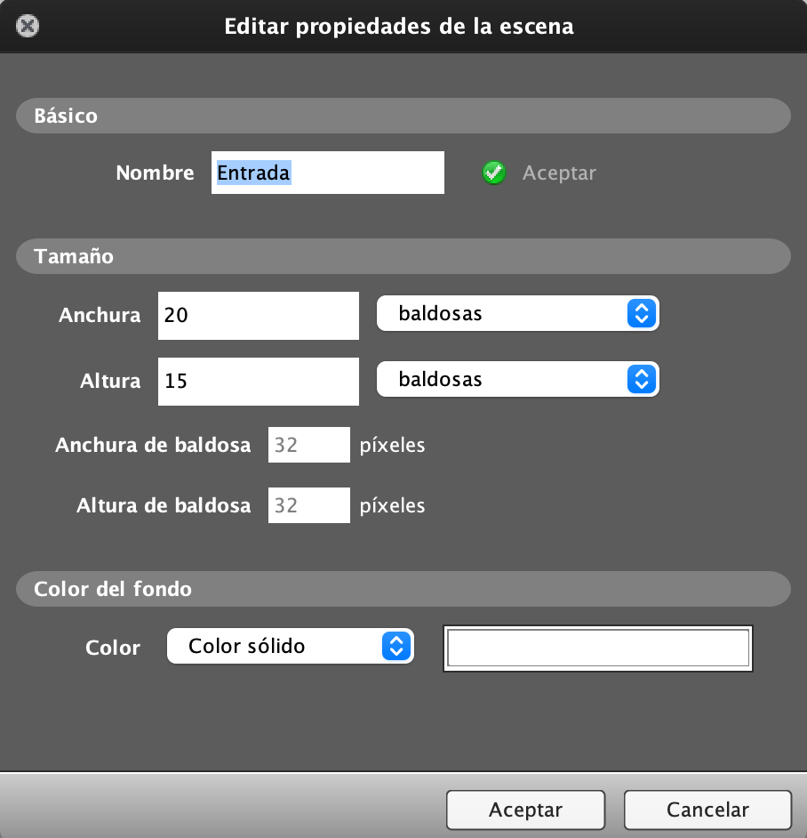
Lo primero que necesitamos son las Tiles (para poder ponerlas en el Escenario), asi que las tendremos que añadir al proyecto dentro de
Set de baldosas.
Seleccionamos el archivo "Baldosa Mazmorra1.png" y "Baldosa Mazmorra2.png". Escala la pondremos a 1.
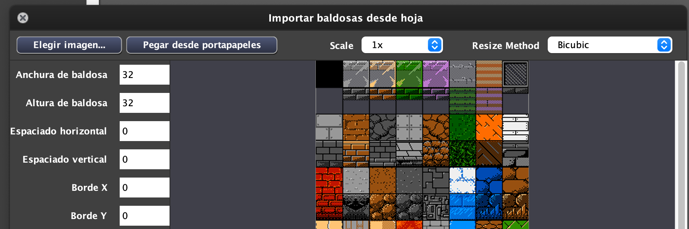
Y dibujaremos nuestro nivel. Con una salida que será de color negro para poder ir al siguiente nivel. La Escena no tendrá gravedad.
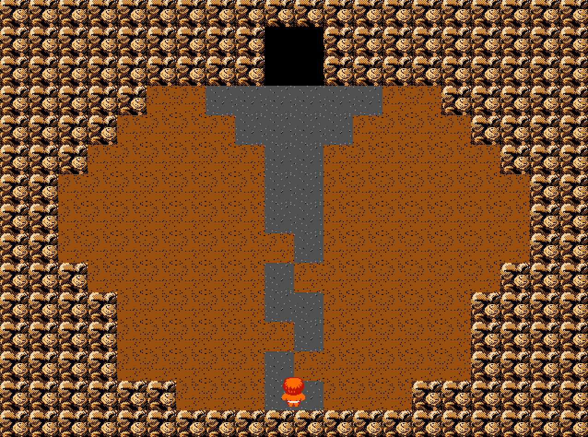
Para que el Player pueda salir al siguiente Nivel necesitaremos crear una "Región".
Para crear una Región dentro de la Escena vamos a la Escena y nos aparece en la parte de la izquierda unos botones. Seleccionamos el que pone
"Añadir zona (caja)". Y la ponemos donde nos interese y le podemos dar un nombre e incluso podemos cambiar su tamaño.
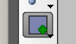
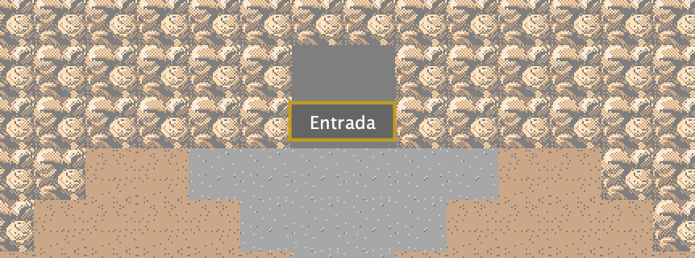
La Escena tendrá 2 Eventos:
- Created. Le ponemos la Musica de fondo en un canal para no interrupir su sonido.
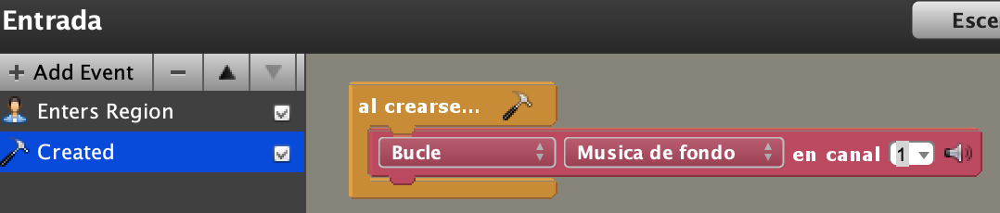
- Enters Region. Cuando el Player entre en la Región que hemos creado pasara al Nivel1 y comenzara el juego.
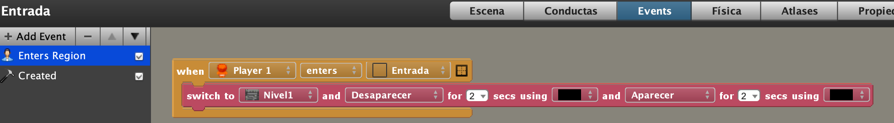
La Escena Nivel1 lo haremos más adelante. Vamos a comenzar con el Movimiento del Player y el Disparo.
El Player se movera con las flechas en las 4 direcciones cambiando de animación.
La cámara le seguira continuamente.
Si nos quedamos sin vidas aparecera una escena de Game Over que haremos mediante baldosas.
Si presionamos la tecla "Z" disparara en la dirección que nos encontremos.
Si se golpea con los Slime se le quitara una vida al Player.
Antes de comenzar tendremos que poner la Fisica. Modificaremos en principio la solapa de "General"
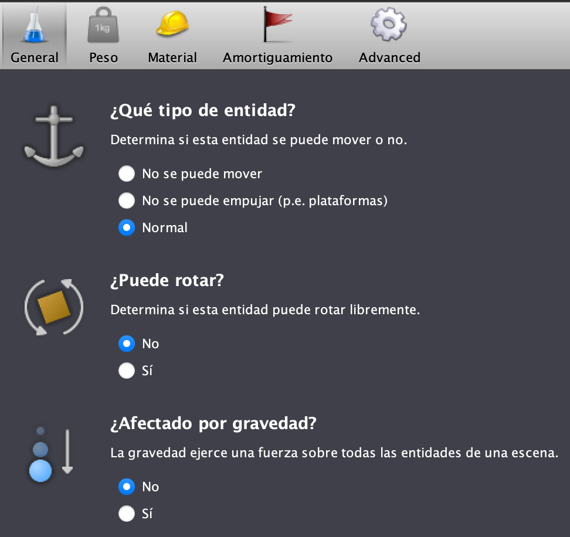
En Material subimos un poco la Elasticidad para cuando se de con el Slime rebote un poco.
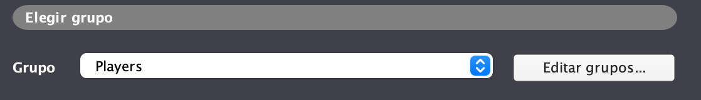
Y en Propiedades pertenecerá al grupo de los "Players".
Comenzaremos con los Eventos del Player:
- Created: Lo que haremos es que la cámara se situe donde este y personaje y nos creamos una Atributo del juego "vidas" que le asignaremos
el valor de 3.
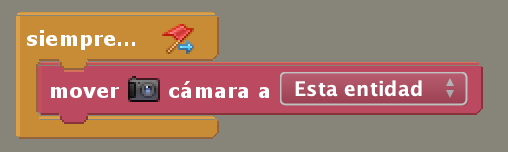
Tendremos varios Eventos de tipo Updating para tenerlo un poco más controlado. Se pueden renombrar con otro nombre para saber que es lo que hace cada evento.
- Updating: La cámara estará continuamente siguiendo al Player.
- Updating: Haremos el movimiento y el cambio de animaciones. Si no pulsamos nínguna flecha el Player se quedára quieto.
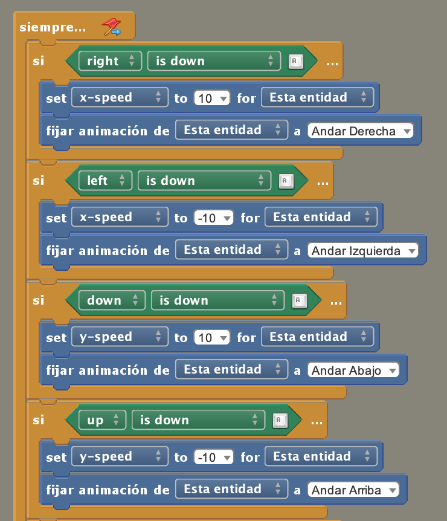
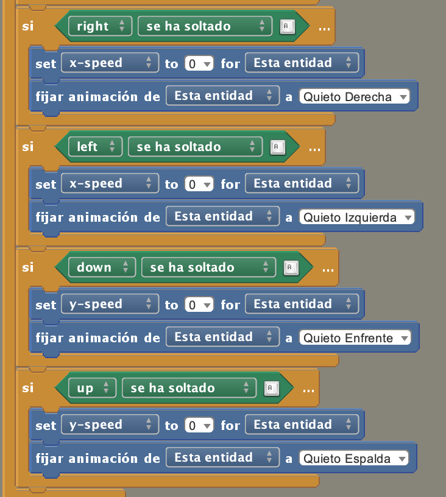
- Updating: Si ya no le quedán vidas aparecera la Escena de Game Over y pararemos todos los sonidos.
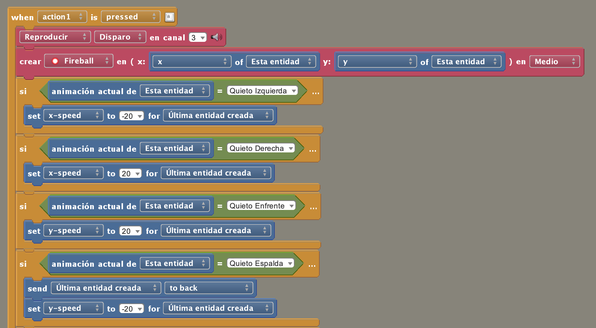
Tendriamos que hacer una nueva Escena llamada "Game Over". El texto lo podemos hacer con las Tiles haciendo la forma de las letras. Igual tendriamos que hacer una Escena "Final" que tuviera un texto de "You Win".
- Keyboard: Si le damos a la tecla "Z" se lanzará el disparo. Y dependiendo de que animación tenga el Player el disparo ira a una dirección u otra.
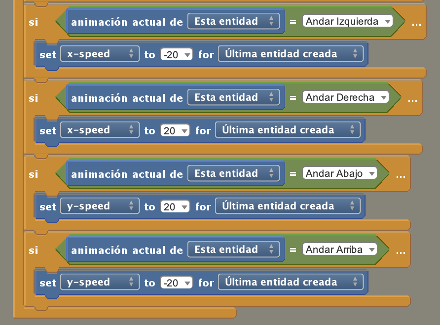
El movimiento del Fireball se podria hacer con otro bloque "presionar" en vez "x e y-speed" y la dirección con una variable en vez de con las animaciones.
Nos faltaria hacer en el Player la colisión con las Slimes que lo haremos cuando hagamos a los Slimes y los programemos.
El Fireball aparecerá cuando le demos a la tecla "Z" e ira hacia la dirección en que se encuentre el Player (Ya lo hicimos desde el Player).
La Física General del Fireball será la misma que la del Player. El resto de las solapas de la Física no las tocamos.
Nos faltaria hacer dos tipos de Eventos de Colisión uno con las Tiles y otro con el Grupo de colisión "Puerta de Pared". En ambos casos lo
único que hariamos es destruir el Fireball.
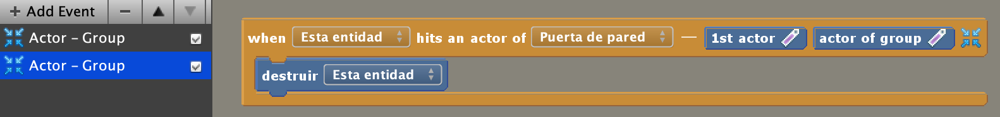
Haremos un nuevo Grupo de Colisión "Fireball" que colisionara con: Tiles, Actors y se lo pondremos al Fireball y otro nuevo Grupo
que haremos que son Puerta de pared.
El Grupo de Colisión Puerta de pared colisionara con: Players, Actors y Fireball.
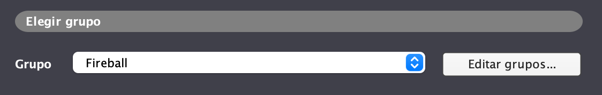
Tendremos que saber varias cosas antes de comenzar:
- En todas las Escenas tenemos que tener 2 Conductas: Contar Personajes y Deslizar Puerta.
- Habrá que tener en pantalla las Vidas del Player y cuantos enemigo o interruptores hay para eso necesitamos la conducta de Contar Personajes.
- Y necesitaremos otra Región para pasar al siguiente nivel.
Empezamos....
Cuando el Player atraviesa la Puerta de la entrada haciamos un switch al Nivel 1 que todavia no teniamos creada la Escena. Asi que vamos hacerlo ahora.
El tamaño de las Escenas de los niveles los haremos más grandes para que la cámara pueda seguir al Player.
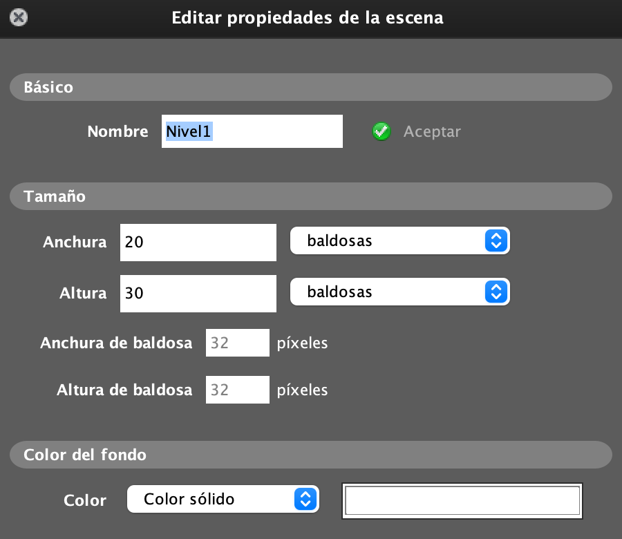
El Nivel del juego quedaría de la siguiente manera y pondriamos al Player encima de la entrada del color negro que sería el fondo de la puerta de entrada.
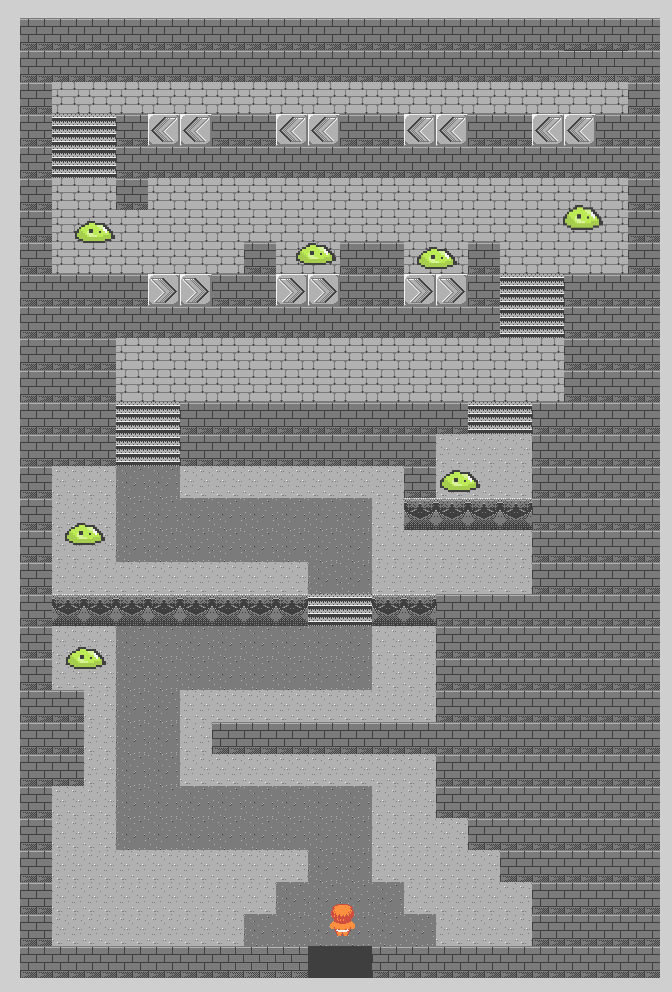
Cuando ejecutemos el juego no lo veremos todo a la vez. Solo veremos un trozo ya que cuando creamos el Juego le dimos unas dimensiones. Esto lo podemos ver en Settings/Configuración/Display
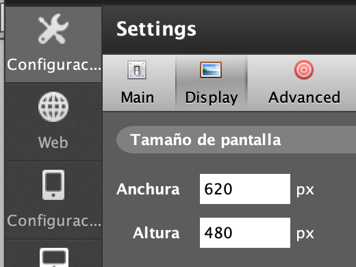
Pondremos varios Slimes en la Escena. Asi que vamos a empezar a programar a los Slimes.
La Física General del Slime será la misma que la del Player. El resto de las solapas de la Física no las tocamos.
Pertenecera al Grupo de Colisión de los Actors. Que colisionarán con todos los grupos incluso con ellos mismos. Recordemos que los grupos están
en Settings/Grupos.
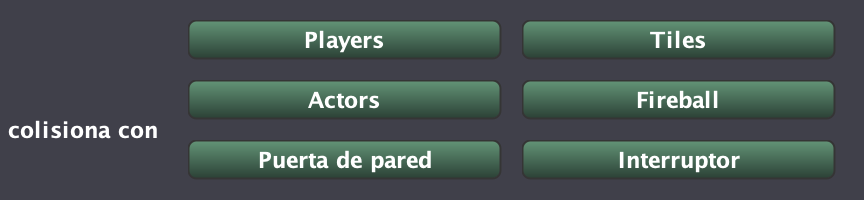
Comenzaremos con los Eventos del Slime:
- Created: Crearemos un Atributo de "Vidas" que serán 2. Son variables para cada uno de los Slimes.
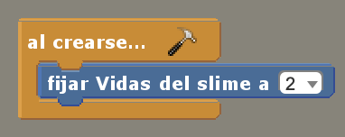
- Updating: Necesitamos otro Atributo de "Direccion Slimes". Será un número aleatorio entre 1 y 4 que cambiara la x-speed ó la y-speed del Slime cada cierto tiempo.
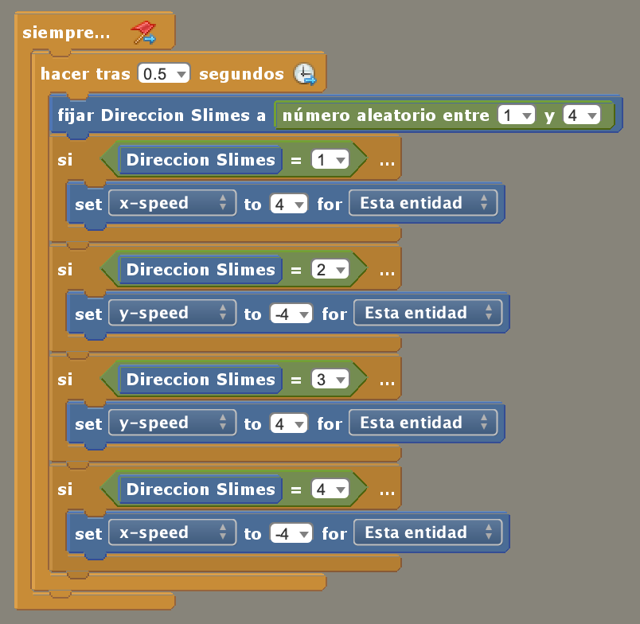
No poner acentos en los atributos, animaciones....... Puede haber problemas.
- Actor-Type: Cuando el Slime es golpeado por el Fireball.
- Destruimos el Fireball.
- Necesitamos un Atributo "Vidas del slime" que le restaremos.
- Si Vidas del slime es 1 teñimos al Slime de rojo.
- Y si es 0 se destruira el Slime.
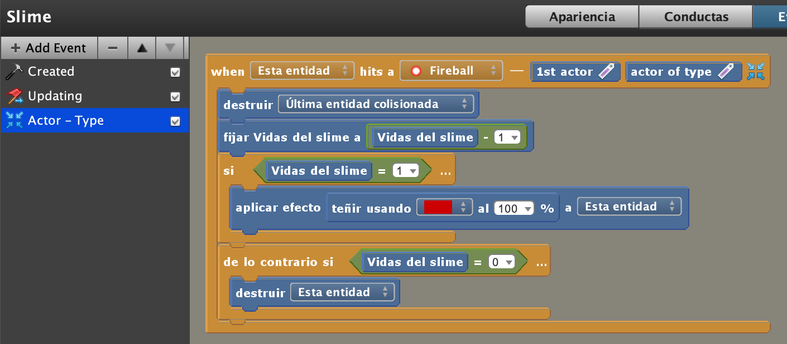
Ahora que tenemos el Slime programado nos faltaria hacer en el Player que nos quite vidas si nos golpea el Slime. Necesitaremos ir
al Player y crear un Evento de tipo "Actor-Group"
- Tenemos otro Atributo del Juego "Golpe" que será booleano. Y estará a falso al principio.
- Si se ha golpeado y es falso se pondrá a verdadero y le quitara 1 vida al Player.
- Y al cabo de 1 segundo volvera a dejar el Atributo Golpe a falso por si se vuelve a chocar de nuevo.
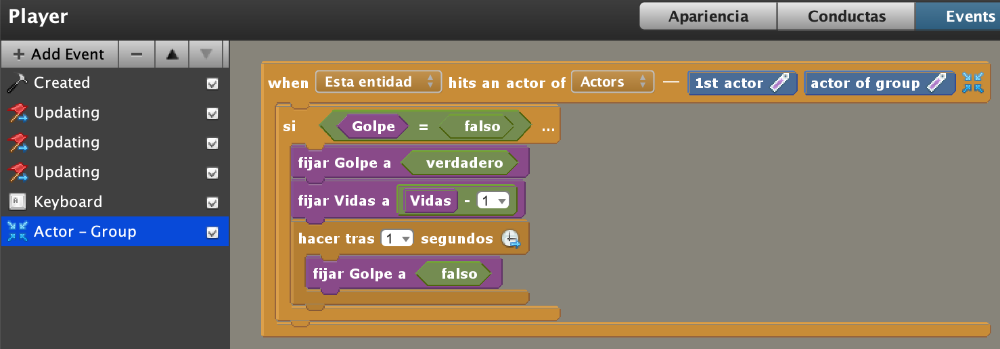
Vamos a terminar los Eventos del Nivel 1 y luego haremos las dos Conductas que necesitamos.
Eventos Nivel 1:
- Created: Inicializamos un Atributo del juego "Puerta abierta" a falso.
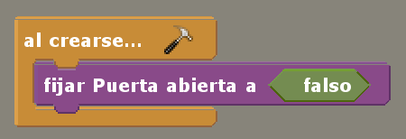
- Drawing: Crearemos fuente de color blanco para que se vea mejor y mostraremos los Enemigos/Interruptores si hay y las vidas del Player.

- Enters Region: Cuando el Player entra en una Región pasara al siguiente Nivel
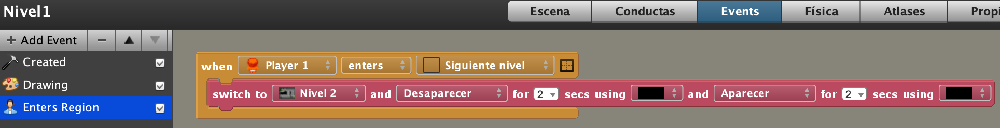
Los Eventos del Nivel 1 serán iguales que los del resto de los Niveles excepto que el Evento Drawing tendrá que mostrar el número de Interruptores que tiene y cuando entra en una Región ira al siguiente nivel.
Nos faltaria hacer las conductas que las tendrán en cada uno de los Niveles que hagamos. Serán Conductas para las Escenas.
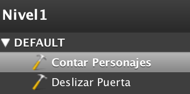
Para incluirlas en los Niveles abrimos las Escenas y en la pestaña de "Conductas" las agregamos dando a un botón que está en la parte de abajo a la izquierda.
Conducta "Contar Personajes"
Para crear la Conducta vamos a la solapa de "Central del juego" y vamos a CONDUCTAS/Para escenas.
Conducta Contar Personajes. Tendrá dos Eventos:
- Created: Donde contaremos todas las entidades que pertenezcan al grupo de los "Actores". Le sumaremos al atributo "Slimes". Y
haremos lo mismo para los Interruptores que pertenezcan al grupo de "Interruptor" sumandole al atributo "Interruptor". Estos
atributos los mostraremos en el Evento Drawing de las Escenas.
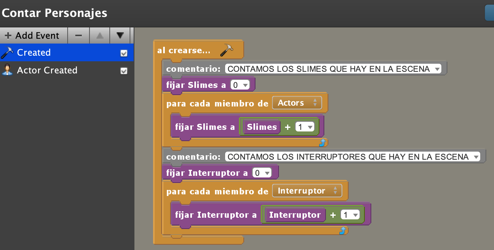
- Actor Created: Cuando el Slime es destruido restara 1 al Atributo del juego "Slimes"
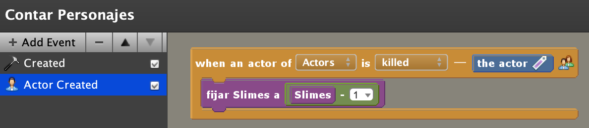
Conducta "Deslizar Puerta"
Para crear la Conducta vamos a la solapa de "Central del juego" y vamos a CONDUCTAS/Para escenas.
Conducta Deslizar Puerta. Tenemos que pasarle unos atributos:
- Puerta Entrada y Puerta Salida serán un atributos de tipo Entidad. Para saber que entidad se tiene que abrir/cerrar en cada Nivel.
¡Estos atributos se crean dentro de la Conducta.
- Posicion a deslizar Puerta Entrada y Posicion a deslizar Puerta Salida serán un atributos de tipo Númerico. Para saber cuanto se tiene que
deslizaren cada Nivel. Estos atributos se crean dentro de la Conducta.
- Deslizar Derecha Puerta Entrada será un atributo de tipo booleano. Para saber hacia donde tengo que deslizar la Puerta.
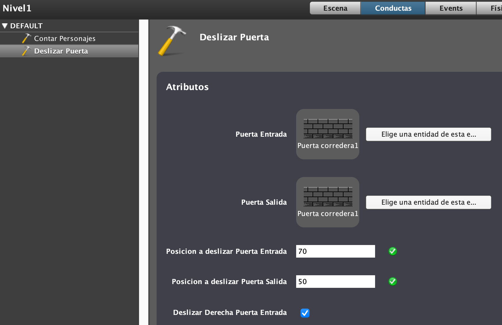
En este ejemplo solo he usado estos atributos. Se pueden usar más o menos dependiendo las necesidades del juego.
Conducta Deslizar Puerta. Tenemos 3 Eventos:
- Created: Hacemos un sonido "Puerta" nada más entrar en el Nivel para que se cierre. Inicializar Atributo del juego "Puerta abierta" a falso para
saber que se ha cerrado. Y al cabo de unos segundo la Puerta Entrada se deslizara hacia la derecha o a la izquierda dependiendo de un parámetro boleano.
Para el sonido usaremos canales para no pisar el sonido de fondo del juego.
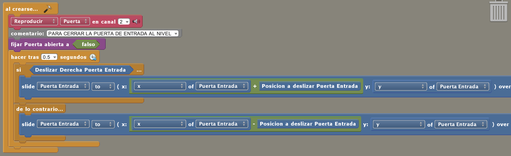
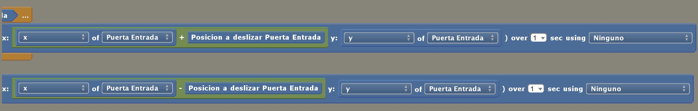
- Updating Deslizar: Si no esta la "Puerta abierta" y has pisado todos los Interruptores y no hay Slimes abriremos la puerta de Salida que esta como oculta. Y
volvemos a dejar el Atributo del juego "Puerta abierta" a verdadero para usarlo en el siguiente nivel.
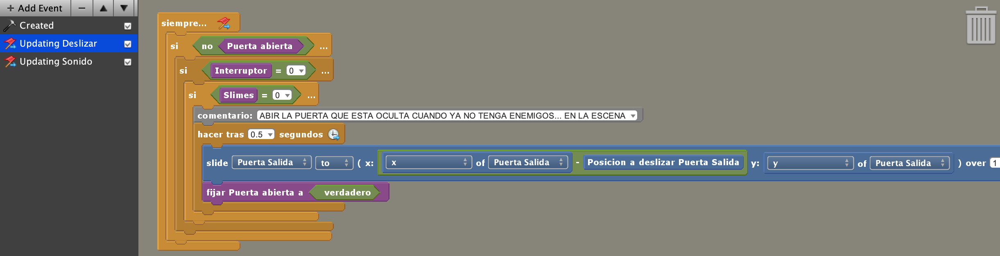
- Updating Sonido: Si no esta la "Puerta abierta" y has pisado todos los Interruptores y no hay Slimes sonara el sonido. Lo hacemos aparte para que el
deslizar de la puerta y el sonido se haga a la vez.
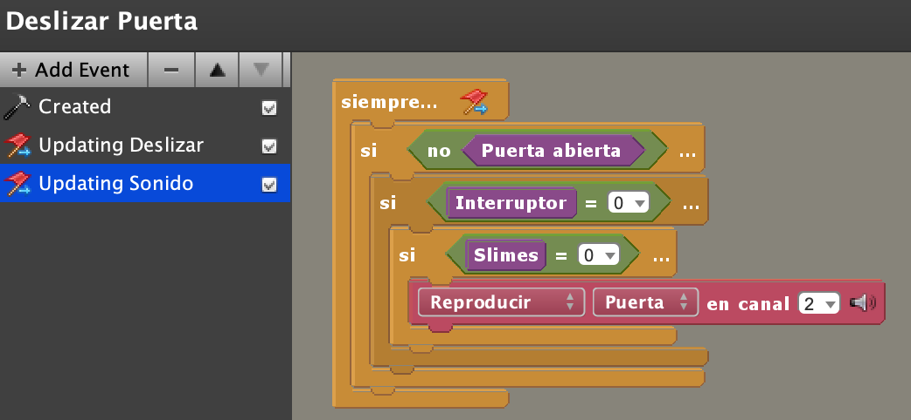
Faltaria hacer los interruptores...Explicaremos solo el Interruptor suelo, ya que funcionan de la misma manera.
- Tendrán 2 sprites en activo y el desactivado. Pondremos el Desactivado al comenzar el juego.
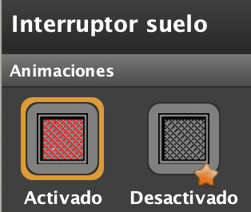
- Tendra un Evento Actor-Type y cuando golpea al Player restara al Atributo del juego "Interruptor" y cambiaremos su animación a "Activo".
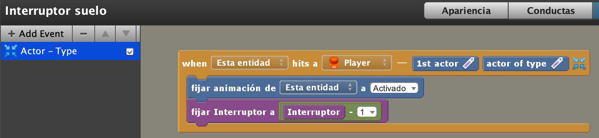
- La animación "Activo" no tendra colisión pero "Desactivado" si tiene colisión.
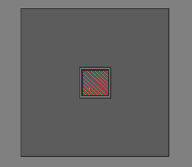
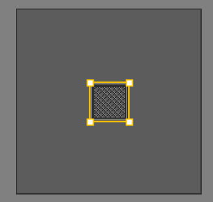
- La Física del Interruptor solamente pondremos que no se pueda mover.
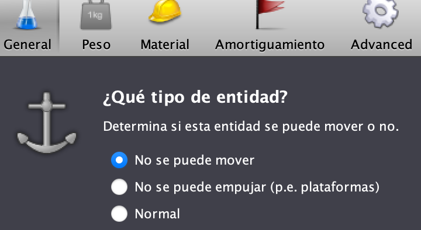
- Y en Propiedades le ponemos que pertenezcan al Grupo de Colisuón de "Interruptor". Y colisiona con Players y Actors.
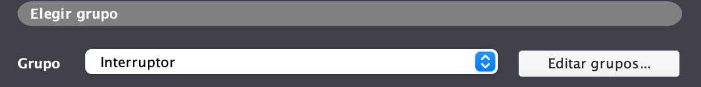
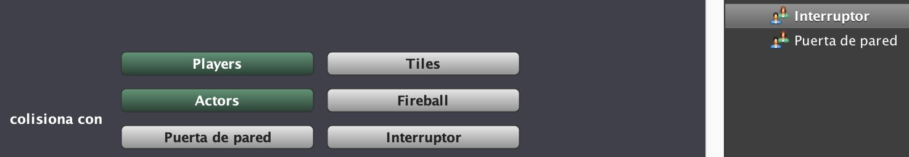
Tenemos 3 Sonidos.
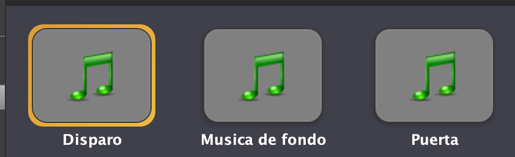
Creamos una fuente para poder mostrar las vidas, enemigos e interruptores en cada escena.
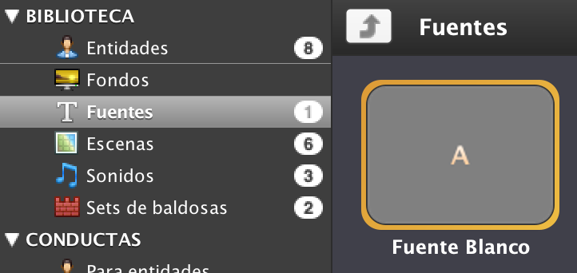